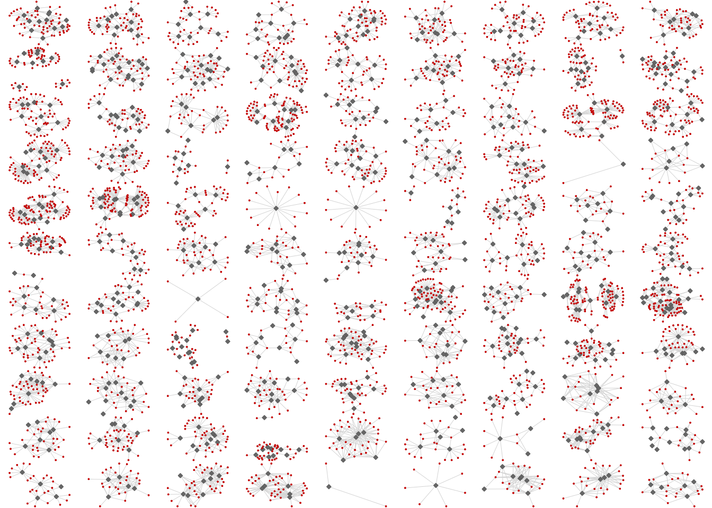

library(network)
library(netplot) Nursing Home
This webpage will explore the dataset exploring connections between health care providers and their patients in VA nursing homes. The data was taken from “Assessing Pathogen Transmission Opportunities: Variation in Nursing Home Staff-Resident Interactions”. This is the “Example 2” on the poster.
Libraries
These are the packages that were used for this analysis:
Loading Data
Previously, the data has been cleaned and loaded as an .RData file type. It is loaded below:
load("./misc/data-raw/nursing_home/network99_f1.RData") Pre-Requisites for For-Loop
Afterwards, in order to run each of the graphs in a “For-Loop”, we need to create a place for the graphs to go and a seed to make it reproducible:
# Creates an empty list to store the networks
nets <- list()
# Sets a seed for reproducibility
set.seed(1231) Running the For-Loop
Now everything is set for the For-Loop to run. This part of the code is where the personalization of the graphs come in. As you can see, there are a number of aspects from netplot that can be manipulated to make the graph look better. Here is the code for that:
for (i in 1:99) {
# Checks if the vertex "is_actor" exists in the network
is_health_care_provider <- networks[[i]] %v% "is_actor"
nets[[i]] <- nplot( networks[[i]],
# Colors the vertices gray if HCP exists, red otherwise
vertex.color = ifelse(is_health_care_provider, "gray40", "red3"),
# Makes vertices square if HCP exists, round otherwise
vertex.nsides = ifelse(is_health_care_provider == TRUE, 4, 10),
# Makes HCP vertices larger than patient vertices
vertex.size = ifelse(is_health_care_provider == TRUE, .25, .15),
vertex.size.range = c(.015,.065),
edge.width.range = c(.25,.5),
# Sets edge line breaks to 1 and colors edges black
edge.line.breaks = 1, edge.color = ~ ego(alpha = 1, col = "lightgray") + alter(alpha = 1, col = "lightgray"),
edge.curvature = pi/6,
# Removes vertex labels
vertex.label = NULL )
}Graphing it all!
Lastly, we need to combine each of the graphs into one graph!
# Combines the 99 plots into an 11x9 grid
allgraphs <- gridExtra::grid.arrange(grobs = nets, nrow=11, ncol=9) 